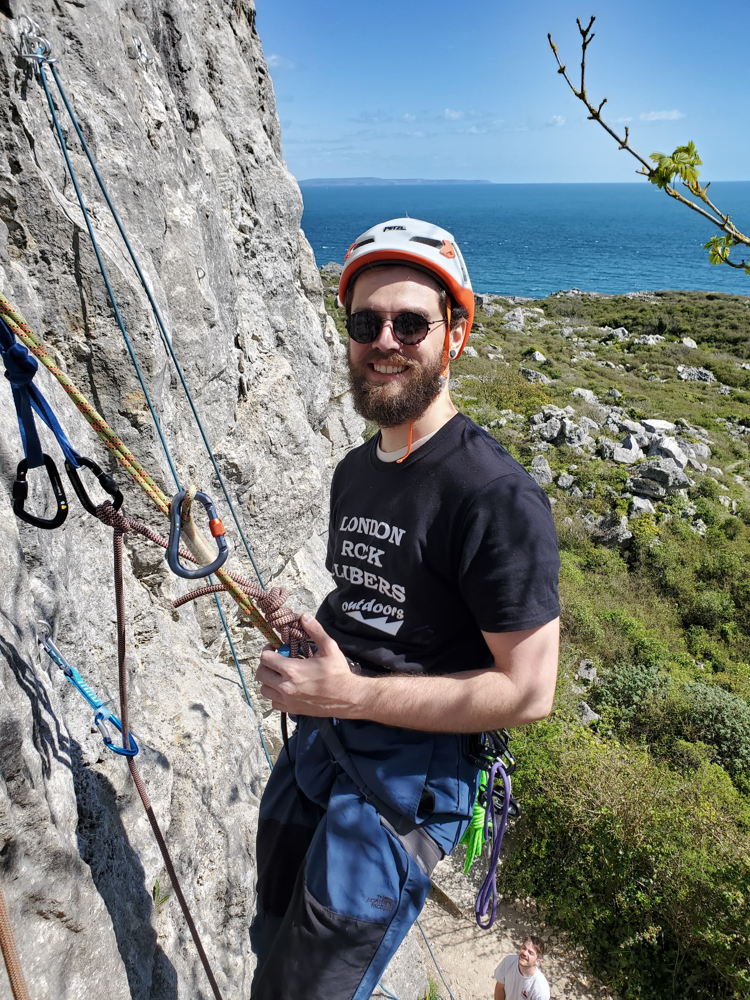

Antoine Théberge
Member of the VITAL of Université de Sherbrooke and the SCIL of Université de Sherbrooke. Most of my research and academic interests are centered around Reinforcement Learning, Deep Learning and Tractography.
Outside of my research, I enjoy running, hiking, cycling, kayaking, bouldering, cooking, reading, watching movies, learning how to play the guitar and attending music shows.
Education
- PhD in Computer Science, Université de Sherbrooke, 2021-
- M.Sc in Computer Science, Université de Sherbrooke, Mention of excellence, 2018-2021
- B.Sc in Computer Science, Université de Sherbrooke, 2015-2018
- Collegiate Degree in Software Engineering, Cégep Édouard-Montpetit, 2012-2015
Student associations
- Représentant d'informatique et responsable des communications at the Regroupement étudiant des chercheurs et chercheuses en sciences de l'Université de Sherbrooke (RECSUS).
- Jeux et Défis Informatique de Sherbrooke
Publications
- Track-To-Learn: A general framework for tractography with deep reinforcement learning - Antoine Théberge, Christian Desrosiers, Maxime Descoteaux, Pierre-Marc Jodoin - Medical Image Analysis; doi: https://doi.org/10.1016/j.media.2021.102093
- Tractographie par apprentissage par renforcement - Antoine Théberge, Faculté des Sciences, Université de Sherbrooke, 2021. https://savoirs.usherbrooke.ca/handle/11143/18288
- Where do streamlines come from? Seeding strategies impact on streamline distribution - Manon Edde, Etienne St-Onge, Antoine Théberge, Guillaume Theaud, Emmanuelle Renauld, Maxime Descoteaux - Proceedings of International Society for Magnetic Resonance in Medicine 2021
- Track-To-Learn: A general framework for tractography with deep reinforcement learning - Antoine Théberge, Christian Desrosiers, Maxime Descoteaux, Pierre-Marc Jodoin - Proceedings of International Society for Magnetic Resonance in Medicine 2021
- Track-To-Learn: A general framework for tractography with deep reinforcement learning - Antoine Théberge, Christian Desrosiers, Maxime Descoteaux, Pierre-Marc Jodoin - bioRxiv 2020.11.16.385229; doi: https://doi.org/10.1101/2020.11.16.385229
Scholarships & Awards
- Bourses étudiantes pour le soutien des travaux de recherche, Centre d’imagerie médicale de l’Université de Sherbrooke (CIMUS) et l’Axe d’imagerie médicale (AIM) du Centre de recherche du CHUS (CRCHUS), 2020
- Bourses étudiantes pour le soutien des travaux de recherche, Centre d’imagerie médicale de l’Université de Sherbrooke (CIMUS) et l’Axe d’imagerie médicale (AIM) du Centre de recherche du CHUS (CRCHUS), 2019
- Direction Recherche, Université de Sherbrooke, 2018
Oral presentations
- Reconstruire la matière blanche avec l'apprentissage par renforcement - Colloque REPARTI 2021 (virtuel)
- Track-To-Learn: A general framework for tractography with deep reinforcement learning - International Society for Magnetic Resonance in Medicine Conference 2021
- Oral presentation about neuroimaging at the École de la Montée for high-school students, spring 2021
- Introduction to Machine Learing, from Linear Regression to Neural Networks (French), spring 2019
Projects
- Track-to-Learn, the public repository of my main research project.
- Scilpy, main code repository of the SCIL laboratory.
- Recurrent Reinforcement-Learning in Pytorch, where I experiment with recurrent neural networks and RL
- I frequently write article reviews for the literature repo of the VITALab. You can find all my reviews here.
Teaching assistant work
As a teaching assistant, I grade course assignments, offer feedback on assignments as well as answer student's questions on assignments and course material in general.
- IFT630: Concurent Processes and Parallelism, summer 2021
- IFT615: Artificial Intelligence, summer 2021
- IFT615: Artificial Intelligence, spring 2021
- IFT603: Machine Learning, spring 2021
- IMN530: Reconstruction et analyse d’images médicales, fall 2020
- IFT603: Machine Learning, fall 2020
- IFT615: Artificial Intelligence, summer 2020
- IFT603: Machine Learning, spring 2020
- IFT603: Machine Learning, fall 2019
- IFT630: Concurent Processes and Parallelism, summer 2019
- IFT615: Articifial Intelligence, summer 2019
- IFT615: Articifial Intelligence, spring 2019
- IFT320: Operating Systems, fall 2017
Work experiences & Internships
- Tree planter, Rhino Reforestation
May 2018 - July 2018 - QA Developper, Outbox Technology
May 2017 - August 2017 - Front-End Developper, Outbox Technology
September 2016 - December 2016 - Web Developper, Morgan Stanley
January 2016 - April 2016 - Web Developper, Pardeux e-Learning
March 2015 - November 2015
Conferences
- Colloque REPARTI 2021, oral presenter, attendee
- ISMRM 2021, oral presenter, attendee
- Symposium on Explanation in Neuroscience and Artificial Intelligence, attendee
- Symposium International Imaginez l'Imagerie 2020, organizer, reviewer
- MAIN 2020, attendee
- MIDL 2020, reviewer, volunteer, attendee
- UNIQUE 1st Scientific Day, 2019, attendee
- Cabane.io @ Sherbrooke, 2019, organizer
- Hackfest, 2019, attendee
- ISMRM 2019, attendee
- DIPY Workshop 2019, attendee
Competitions
- Northsec 2020, team Clickesti
- CS Games 2020, coach and mentor
- Nothsec 2019, JDIS Team
- JDIS Games 2019, organizer
- CS Games 2019, coach and mentor
- Coveo Blitz 2019, team PerchaUDES
- CS Games 2018, team romano
- Google Games 2018, team Ba$$in
- Coveo Blitz 2018, team Laser Raptors
- CS Games 2017, team Ramsay
Links
OpenReview
GitHub